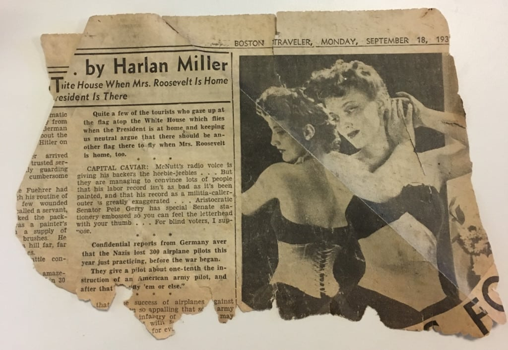

Yesterday I was walking from my studio to the train station and saw a scrap of newspaper on the sidewalk. This is nothing remarkable, but it caught my eye because the photograph seemed old, and the paper was yellowed with age. Upon inspection, the torn fragment was from the Boston Traveler dated September 18th, 1939.

Someone must have just cleaned out their basement or attic. I thought about how there was a person holding the newspaper from which this was torn in 1939, before my parents were born. "Hitler", "Fuehrer", "Nazis" appear in the text.
Quite a few of the tourists who gaze up at the flag atop the White House which flies when the President is at home and keeping us neutral argue that there should be another flag there to fly when Mrs. Roosevelt is home, too.
Amazing to think what it must have been like to be reading this at that time, just when World War II was beginning and before the United States became directly involved. I can't help but make comparisons to now, when no one knows what the future will hold, and the political climate seems terrifyingly bizarre. This photograph of the woman spooks me now, as she looks back at her reflection, the mirror of history displaying the laced binding of her corset — a garment of confinement and conformity. Slaves to ourselves, never able to escape the debt of our past, we risk repeating mistakes throughout time, lashed to the karmic wheel.
Neutrality is impossible.